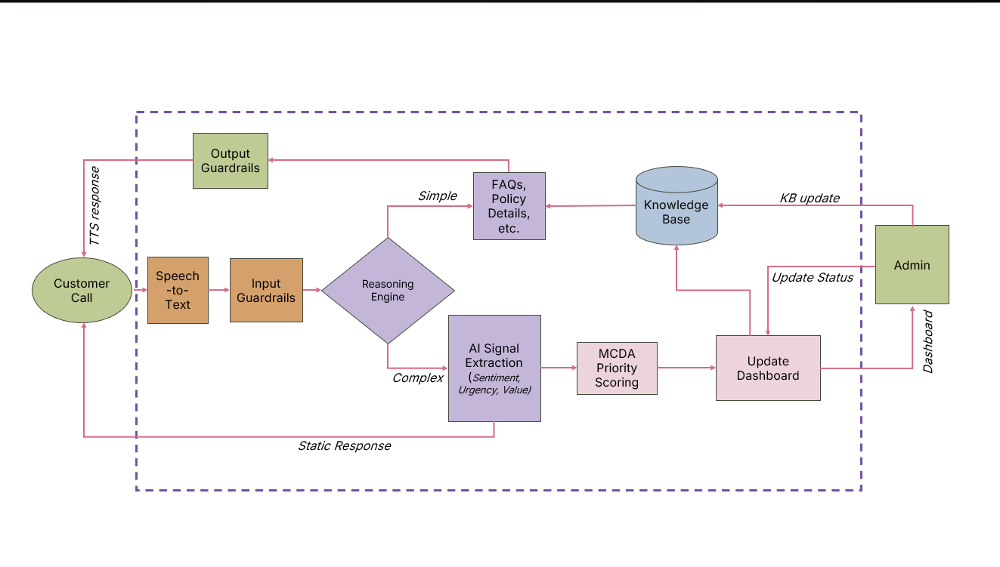
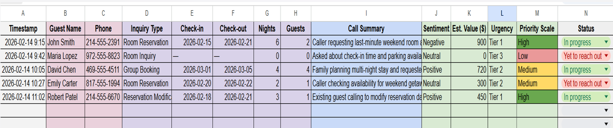

How an Agentic AI Framework Is Redefining Customer Interaction Prioritization for Small Hospitality Businesses
By Chaitra Neha Pulletikurthi and Neola Grannita D Sa
University of North Texas
This article presents Echoes of the Unheard, an agentic AI framework for prioritizing customer interactions in small hospitality businesses. The framework combines speech-to-text, AI signal extraction, and Multi-Criteria Decision Analysis (MCDA) to rank calls based on sentiment, urgency, and business value. By moving beyond traditional operational metrics, the proposed approach aims to support better callback prioritization, recover missed revenue opportunities, and improve service responsiveness under constrained staffing conditions.
Picture a Friday evening at a small boutique hotel. The front desk is slammed. The phone rings. Then rings again. And again. No one answers.
Those missed calls aren't just a service inconvenience — they are a measurable, recurring financial wound. Research shows that the average business loses approximately $126,000 annually from unanswered calls, with 85% of callers unlikely to ever dial back. In hospitality specifically, losing just 10% of inbound calls during peak hours can cost upward of $27,000 per year in missed revenue alone.
And the damage doesn't stop at the ledger. One unanswered call from a dissatisfied guest can spiral into a negative review that quietly reshapes how future guests perceive a property before they ever walk through the door.
This is the quiet crisis facing small hospitality businesses today: peak demand, limited staff, and a customer service system that treats every interaction the same — whether it matters or not.
The hospitality industry has call volume reports, response time dashboards, and customer satisfaction scores. Operations teams have no shortage of metrics to review.
But here is the uncomfortable truth 74% of current customer service systems measure only operational activity, not business value1. They tell you how many calls came in. They don't tell you which calls mattered most.
A guest calling to book a table for twelve on New Year's Eve is not the same as someone asking for directions to the parking lot. Yet, without a smarter system in place, both calls go into the same queue, or worse both get missed and follow-up happens in any order that feels convenient.
This is the problem our research set out to address.
Current systems track:
What they often miss:
Which interaction actually mattered most.
They tell you how many calls came in. They don't tell you which calls mattered most.
Our voice AI framework is designed specifically to help small hospitality businesses stop reacting to everything and start prioritizing what actually drives outcomes.
The framework operates across a clear, end-to-end workflow:
Framework Overview

Figure 1. Proposed framework showing how customer calls move through transcription, reasoning, prioritization, knowledge support, and dashboard feedback loops. Source: Authors’ conceptual design.
The Call Comes in: A customer call is received and processed through input guardrails that screen for safety and relevance before any AI analysis begins.
Speech-to-Text Transcription: The conversation is transcribed in real time, converting the voice into text.
AI Signal Extraction: This is the reasoning engine that extracts three critical signals from each call-
Multi-Criteria Decision Analysis (MCDA) Priority Scoring: Each call is assigned a weighted priority score- Priority Score = w₁(Sentiment) + w₂(Urgency) + w₃(Business Value)
Initial weights are calibrated by domain expertise, assuming business value to be highest, and to evolve learning optimal weights over time from historical data.
Routing and Response: Simple, knowledge-base queries (FAQs, policies, hours) receive an automated Text-to-Speech response immediately. Complex interactions are escalated to a human agent, flagged by priority tier. Every interaction is updated in the live dashboard.
Consider three calls arriving simultaneously at a small restaurant on a Saturday evening:
| Call | Sentiment | Urgency | Business Value | Priority Tier |
|---|---|---|---|---|
| Guest trying to make a reservation immediately | Negative | High | High | 🔴 High |
| Recent guest with a follow-up | Neutral | Moderate | Moderate | 🟡 Medium |
| Caller asking about parking | Positive | Low | Low | 🟢 Low |
To illustrate how this framework translates into real-world operations, the following conceptual dashboard shows how prioritized interactions could be surfaced for decision-making.

Figure 2. Conceptual dashboard illustrating how prioritized interactions would be surfaced based on sentiment, urgency, and business value. Source: Authors’ conceptual mockup.
Without a framework, callbacks happen randomly, often in reverse order of impact. With MCDA-driven prioritization, the reservation call gets addressed first (revenue recovery), the complaint follows (retention risk), and the parking inquiry is handled whenever capacity allows.
This isn't automation replacing judgment. It's AI amplifying judgment — at scale, in real time.
What makes this framework genuinely different is the underlying philosophy shift it demands.
Most service teams are trained to optimize for throughput: answer more calls, reduce hold times, close tickets faster. These are legitimate goals but they measure activity, not impact. A team can hit every SLA and still lose the customers who mattered most, simply because no one knew they mattered most.
Advanced analytics is prioritized by business value, not just by arrival order. This can improve customer satisfaction by 15% and revenue outcomes by 5%2.
The question shifts from "How many calls did we handle today?" to "Did we handle the right calls first?"
Echoes of the Unheard is an early-stage framework with significant runway ahead. Our future research directions include:
The ROI equation for this framework is straightforward: recovered missed booking revenue + reduced staffing overhead + 24/7 relevant responsiveness = compounding returns over time. And for small hospitality businesses operating on thin margins during unpredictable seasons, that compounding matters enormously.
In a world where staff bandwidth is finite, the businesses that learn to distinguish signal from noise, urgency from routine, revenue risk from general inquiry will outperform those that don't.
The calls your team missed today weren't silent. They had something to say.
The question is whether your systems were listening.